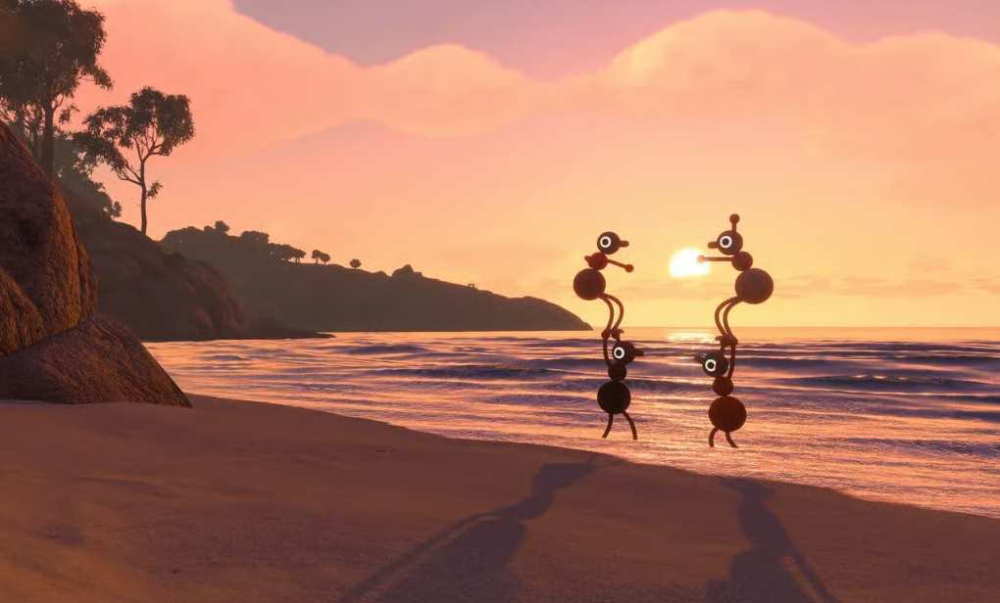

Quick answer: Plan several sessions with the same host instead of treating Big Walk as a single quick run. The host keeps the automatic save between sessions.

Community gameplay screenshot supplied by the site owner. This independent guide is not affiliated with House House or Panic.
What affects playtime
- Small groups can coordinate quickly but have fewer hands for simultaneous tasks.
- Large groups may solve roles faster but spend more time regrouping.
- Exploration, collectibles and optional challenges extend a first playthrough.
Planning a session
- Pick one person to keep hosting the saved world.
- Stop after a major unlock or new transport route when possible.
- Record unfinished puzzle locations before ending the session.
After the main route
- Use the map and transport systems for cleaner exploration.
- Review trophies, collectibles and post-game goals separately.
- Avoid spoilers by deciding as a group when to read ending guides.
Official sources
Release, platform, player-count, hosting and crossplay facts are checked against the official Big Walk FAQ and the official Steam page. Last checked August 27, 2026.
Related guides
Recommended walkthrough · Ending guide · Achievements guide · Player count